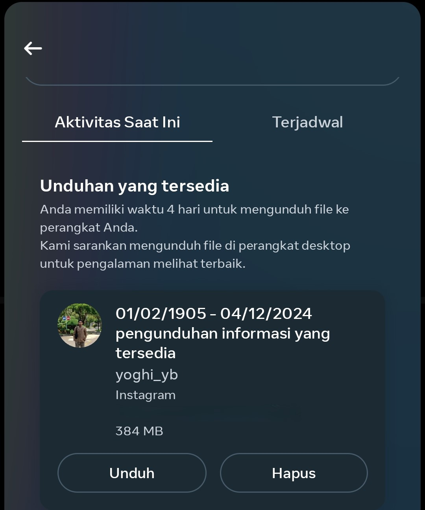

Hello Unfollowers
Panduan Penggunaan Fitur Check IG Unfollower
Pendahuluan
Fitur Check Ig Unfollower tidak menyimpan data apapun.
Langkah-langkah
- Buka aplikasi Instagram, klik profile, lalu klik menu Pengaturan dan aktivitas
- Pilih Pusat Akun
- Scroll ke bawah, Pilih Informasi dan izin Anda
- Pilih Unduh informasi Anda
- Pilih Mengundug atau mentransfer informasi
- Pilih akun instagram anda, lalu tekan tombol
- Pilih Beberapa informasi Anda. jika anda memilih Semua informasi yang tersedia, maka lewati langkah no. 8
- Scroll ke bawah, Pilih Pengikut dan mengikuti
- Pilih Unduh ke perangkat maka akan muncul tampilan seperti ini
- Pilih Rentang tanggal dan sesuikan dengan kebutuhan anda. disini saya memilih Sepanjang waktu, lalu tekan tombol
- Tekan tombol Buat File
- Pilih Format dan pilih JSON, lalu tekan tombol
- Tampilan setelah melakukan langkah no. 12 tunggu hingga proses selesai. dan unduh, dan massukan Password untuk mengunuduh data ke perangkat 
Catatan Penting
- Fitur Check Ig Unfollower tidak menyimpan data apapun, hanya melakukan pemrosesan data di browser anda